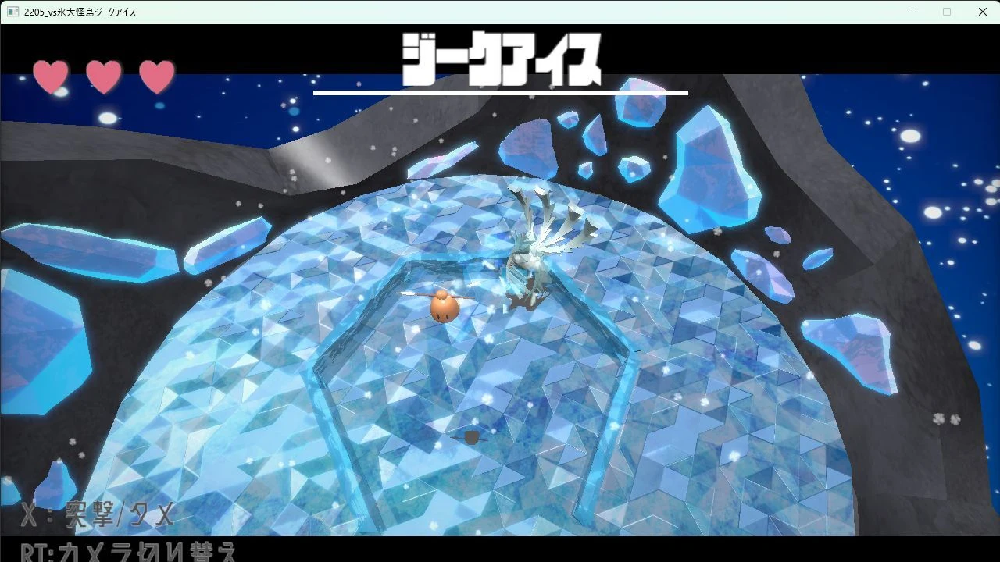

ボス戦らしいカメラワーク
戦う相手の存在感が伝わるように、ボス戦らしい演出とカメラワークを意識しました。
担当内容・制作の工夫を確認してください。
WORK 06 / 2年次 / 3人チーム
ボス戦をテーマに制作したチーム作品です。プレイヤーの挙動とカメラに加え、ボスの登場時の演出を担当しました。
ZIP · 81.8 MiB · DaihyouKaichouJikuAisu.zip
ZIPを展開し、同梱の実行ファイルを起動してください。操作方法や必要な環境は、同梱の説明を確認してください。
配布ファイル一覧を見る（新しいタブ）
PROJECT INFORMATION
| 入力方法 | 対応 |
|---|---|
| キーボード | 対応 |
| マウス併用 | キーボードと併用 |
| Xboxコントローラー | 対応 |
コントローラーの表記はXboxコントローラーを指します。全作品でキーボード操作に対応。— は対応する操作として掲載していない入力です。キーボードで遊ぶ際はマウスも使用します。
学科内評価 3 / 82位。
東京ゲームショウ2026 出展。
MY CONTRIBUTION
戦う相手の存在感が伝わるように、ボス戦らしい演出とカメラワークを意識しました。
ボス登場時の演出とゲーム中のカメラ制御を担当し、戦闘の場面を見せる仕組みを制作しました。